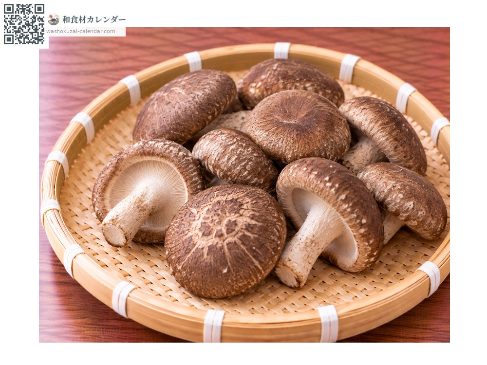
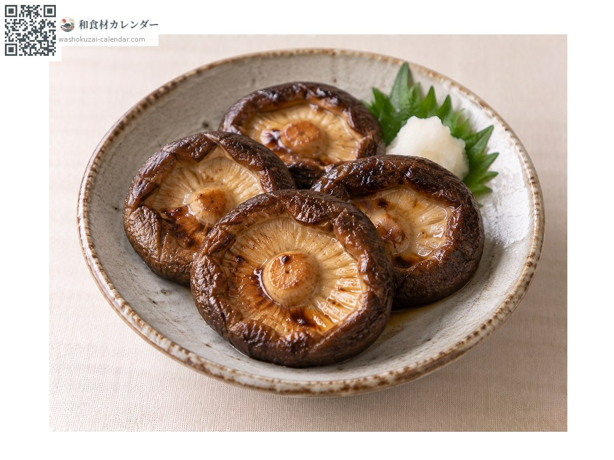
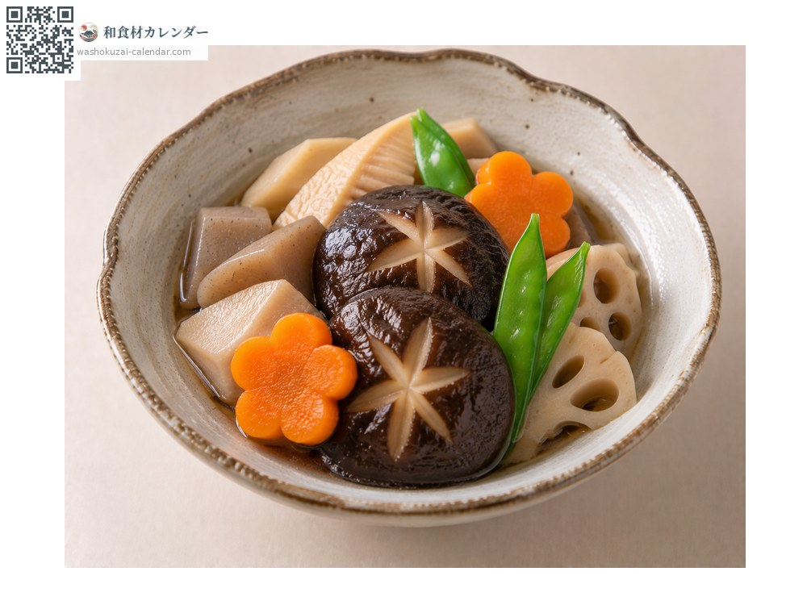
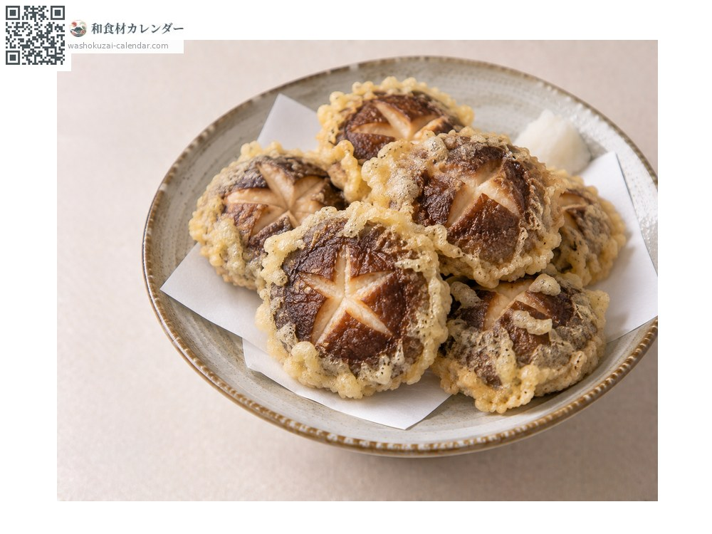
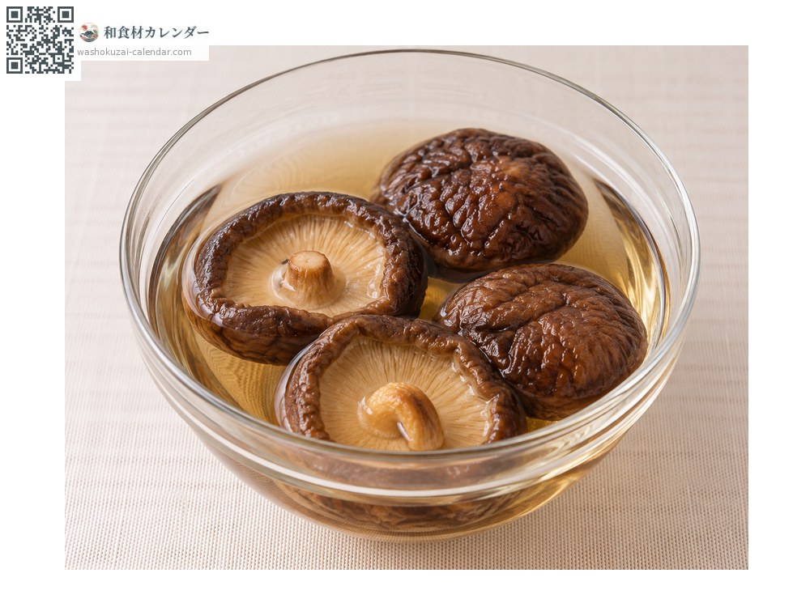

ผัก
เห็ดหอม
シイタケ しいたけ shiitake
ชื่ออื่นshiitake
อร่อยที่สุดในเดือน มี.ค., เม.ย., พ.ค., ก.ย., ต.ค., พ.ย.

ช่วงที่อร่อยที่สุด
ม.ค.
ก.พ.
มี.ค.
เม.ย.
พ.ค.
มิ.ย.
ก.ค.
ส.ค.
ก.ย.
ต.ค.
พ.ย.
ธ.ค.
ช่วงอร่อยที่สุดมีจำหน่าย
วิธีปรุง

เห็ดหอมย่างซีอิ๊ว
ย่างโดยหงายหมวกลงเพื่อไม่ให้น้ำหวานไหลออก

ตุ๋นน้ำดาชิรสอ่อน
ตุ๋นในน้ำดาชิ

เทมปุระ
เลือกดอกหนา ๆ

ใช้ทำน้ำดาชิ
แช่เห็ดหอมแห้งในน้ำเพื่อทำน้ำดาชิ
วิธีเลือก
หมวกหนาและขอบม้วนเข้าด้านใน ครีบใต้หมวกสีขาวสะอาด
วิธีเก็บรักษา
ห้ามล้าง หันก้านขึ้นแล้วห่อกระดาษหรือใส่ถุงกระดาษแช่เย็น แช่แข็งแล้วรสอูมามิจะเพิ่มขึ้น
แหล่งผลิตหลัก
เกร็ดน่ารู้
มีทั้งแบบเพาะบนท่อนไม้และแบบเพาะในถุงเชื้อ เมื่อตากแห้งวิตามินดีและสารรสอูมามิจะเพิ่มขึ้น